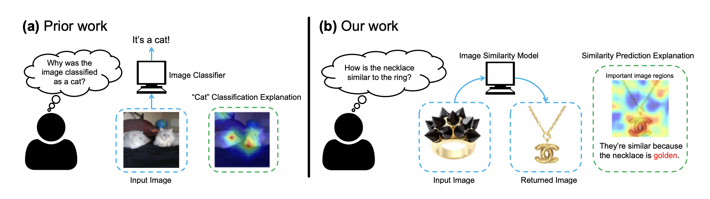
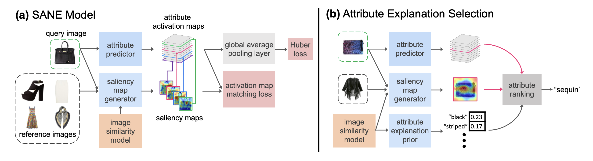
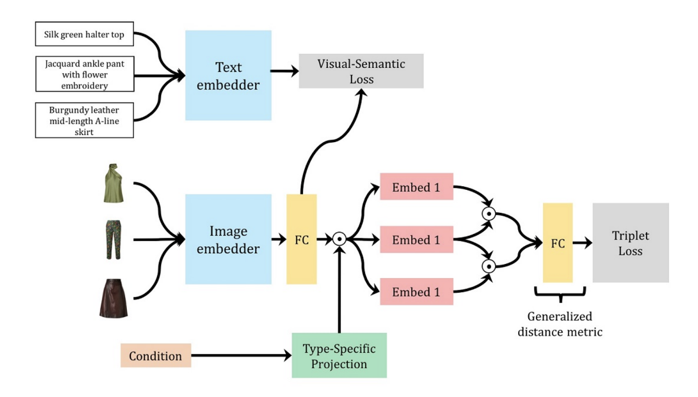
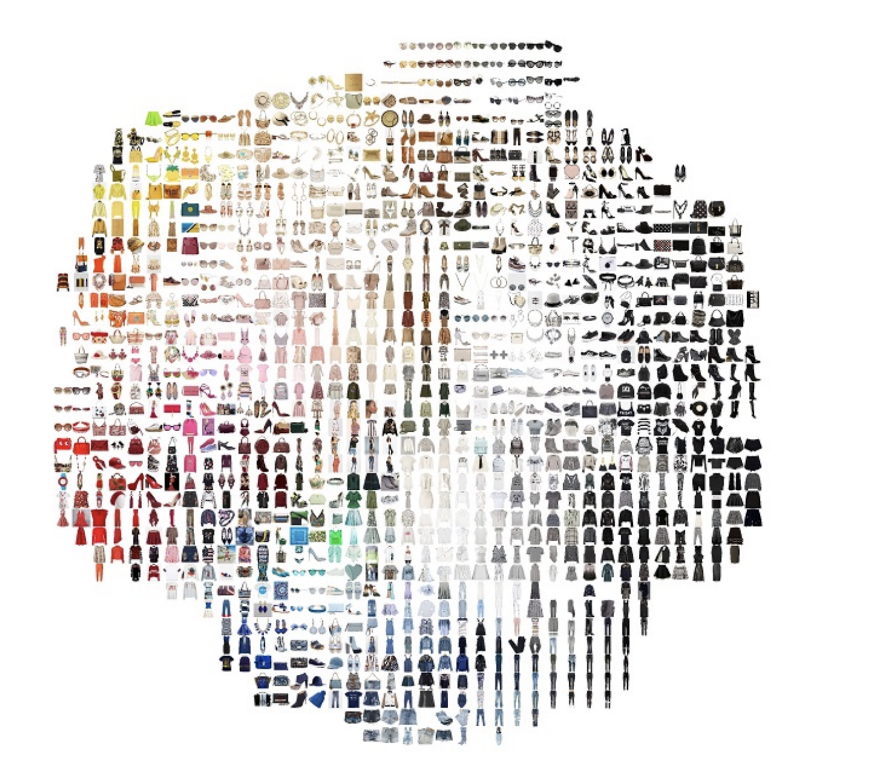
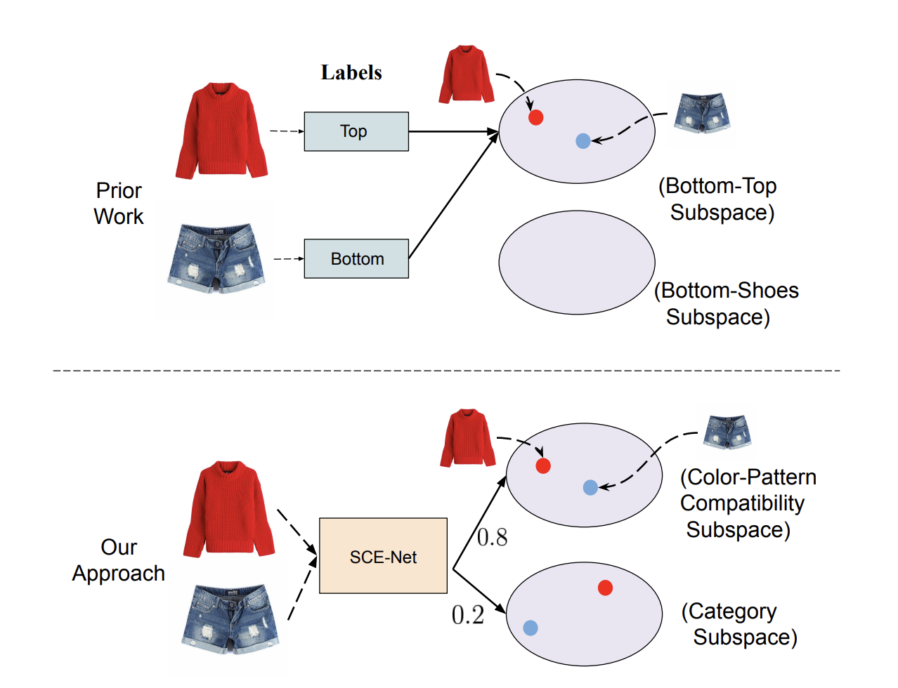
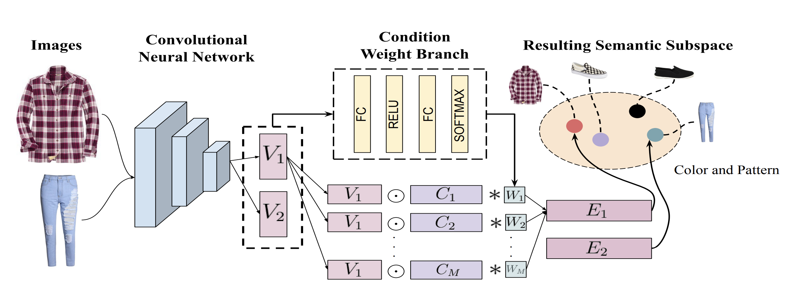

ResearchMy experience lies at the crossover between generative models, multimodal learning, vision and language, foundation models, safety and alignment. |


|
HandsOff: Labeled Dataset Generation with No Additional Human Annotations
Austin Xu, Mariya I. Vasileva , Achal Dave, Arjun Seshadri CVPR, 2023 (Highlight) project page / code / arXiv Recent work leverages the expressive power of generative adversarial networks (GANs) to generate labeled synthetic datasets. These dataset generation methods often require new annotations of synthetic images, which forces practitioners to seek out annotators, curate a set of synthetic images, and ensure the quality of generated labels. We introduce the HandsOff framework, a technique capable of producing an unlimited number of synthetic images and corresponding labels after being trained on less than 50 pre-existing labeled images. Our framework avoids the practical drawbacks of prior work by unifying the field of GAN inversion with dataset generation. We generate datasets with rich pixel-wise labels in multiple challenging domains such as faces, cars, full-body human poses, and urban driving scenes. Our method achieves state-of-the-art performance in semantic segmentation, keypoint detection, and depth estimation compared to prior dataset generation approaches and transfer learning baselines. We additionally showcase its ability to address broad challenges in model development which stem from fixed, hand-annotated datasets, such as the long-tail problem in semantic segmentation. |
|


|
Why do These Match? Explaining the Behavior of Image Similarity Models
Bryan A. Plummer*, Mariya I. Vasileva*, Vitali Petsiuk, Kate Saenko, David A. Forsyth ECCV, 2020 code / arXiv Explaining a deep learning model can help users understand its behavior and allow researchers to discern its shortcomings. Recent work has primarily focused on explaining models for tasks like image classification or visual question answering. In this paper, we introduce Salient Attributes for Network Explanation (SANE) to explain image similarity models, where a model’s output is a score measuring the similarity of two inputs rather than a classification score. In this task, an explanation depends on both of the input images, so standard methods do not apply. Our SANE explanations pairs a saliency map identifying important image regions with an attribute that best explains the match. We find that our explanations provide additional information not typically captured by saliency maps alone, and can also improve performance on the classic task of attribute recognition. Our approach’s ability to generalize is demonstrated on two datasets from diverse domains, Polyvore Outfits and Animals with Attributes 2. |
|


|
Learning Type-Aware Embeddings for Fashion Compatibility
Mariya I. Vasileva, Bryan A. Plummer, Krishna Dusad, Shreya Rajpal, Ranjitha Kumar, David A. Forsyth ECCV, 2018 code / arXiv Outfits in online fashion data are composed of items of many different types (e.g. top, bottom, shoes) that share some stylistic relationship with one another. A representation for building outfits requires a method that can learn both notions of similarity (for example, when two tops are interchangeable) and compatibility (items of possibly different type that can go together in an outfit). This paper presents an approach to learning an image embedding that respects item type, and jointly learns notions of item similarity and compatibility in an end-toend model. To evaluate the learned representation, we crawled 68,306 outfits created by users on the Polyvore website. Our approach obtains 3-5% improvement over the state-of-the-art on outfit compatibility prediction and fill-in-the-blank tasks using our dataset, as well as an established smaller dataset, while supporting a variety of useful queries |
|


|
Learning Similarity Conditions Without Explicit Supervision
Reuben Tan, Mariya I. Vasileva, Bryan A. Plummer, Kate Saenko, David A. Forsyth ICCV, 2019 code / arXiv Many real-world tasks require models to compare images along multiple similarity conditions (e.g. similarity in color, category or shape). Existing methods often reason about these complex similarity relationships by learning condition-aware embeddings. While such embeddings aid models in learning different notions of similarity, they also limit their capability to generalize to unseen categories since they require explicit labels at test time. To address this deficiency, we propose an approach that jointly learns representations for the different similarity conditions and their contributions as a latent variable without explicit supervision. Comprehensive experiments across three datasets, Polyvore-Outfits, Maryland-Polyvore and UT-Zappos50k, demonstrate the effectiveness of our approach: our model outperforms the state-of-the-art methods, even those that are strongly supervised with pre-defined similarity conditions, on fill-in-the-blank, outfit compatibility prediction and triplet prediction tasks. Finally, we show that our model learns different visually-relevant semantic sub-spaces that allow it to generalize well to unseen categories. |